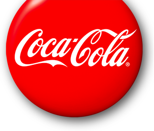
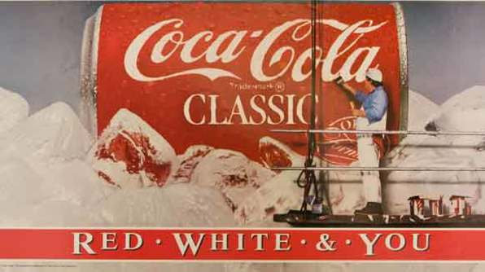

Slogans throughout the years:

Slogans for Coca-Cola From 1886 to 2006
1886 - Drink Coca-Cola
1904 - Delicious and Refreshing
1905 - Coca-Cola Revives and Sustains
1906 - The Great National Temperance Beverage
1917 - Three Million a Day
1922 - Thirst Knows No Season
1923 - Enjoy Thirst
1924 - Refresh Yourself
1925 - Six Million a Day
1926 - It Had to Be Good to Get Where It Is
1927 - Pure as Sunlight
1927 - Around the Corner from Everywhere
1929 - The Pause that Refreshes
1932 - Ice Cold Sunshine
1938 - The Best Friend Thirst Ever Had
1939 - Thirst Asks Nothing More
1939 - Whoever You Are, Whatever You Do, Wherever You May Be, When You Think of Refreshment Think of Ice Cold Coca-Cola
1942 - The Only Thing Like Coca-Cola is Coca-Cola Itself
1948 - Where There's Coke There's Hospitality
1949 - Along the Highway to Anywhere
1952 - What You Want is a Coke
1956 - Coca-Cola... Makes Good Things Taste Better
1957 - Sign of Good Taste
1958 - The Cold, Crisp Taste of Coke
1959 - Be Really Refreshed
1963 - Things Go Better with Coke
1969 - It's the Real Thing
1971 - I'd Like to Buy the World a Coke (part of the "It's the Real Thing" campaign)
1975 - Look Up America
1976 - Coke Adds Life
1979 - Have a Coke and a Smile
1982 - Coke Is It!
1985 - We've Got a Taste for You (for both Coca-Cola & Coca-Cola classic)
1985 - America's Real Choice (for both Coca-Cola & Coca-Cola classic)
1986 - Red, White & You (for Coca-Cola classic)
1986 - Catch the Wave (for Coca-Cola)
1987 - When Coca-Cola is a Part of Your Life, You Can't Beat the Feeling
1988 - You Can't Beat the Feeling
1989 - Official Soft Drink of Summer
1990 - You Can't Beat the Real Thing
1993 - Always Coca-Cola
2000 - Coca-Cola. Enjoy
2001 - Life Tastes Good
2003 - Coca-Cola... Real
2005 - Make It Real
2006 - The Coke Side of Life